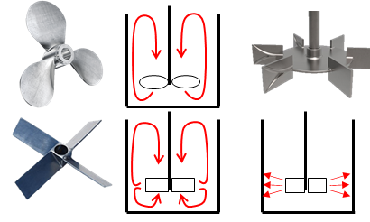

Mixing Technology
Foods are complex in the sense that they consist of many parts related to each other in different ways. One ingredient might be present as a solute (dissolved in water) while another might be dispersed (suspended in water). When food scientists refer to “food structure” they often mean the totality of these parts and relationships. We do not need to go into detailed chemistry or physics to explore these structures.
Consider the three basic phases of matter: gas (G), liquid (L) and solid (S). In a given food system each can be dispersed in the other. When we say that a gas is dispersed in a solid we mean that the solid is continuous while the gas is present as discrete regions separate from each other (e.g., bubbles). In abbreviated form we can represent this as G/S.
Now consider this table:
| G | L | S | |
|---|---|---|---|
| G | G/G | L/G | S/G |
| L | G/L | L/L | S/L |
| S | G/S | L/S | S/S |
Each pair represents a structure, of particular interest are:
- G/L: liquid foam (e.g., beer froth)
- G/S: solid foam (e.g., bread)
- L/L: emulsion (e.g., milk)
- L/S: gel (e.g., yoghurt)
- S/G: powder (e.g., soy protein concentrate)
- S/L: liquid suspension (e.g., fruit juice with bits)
- S/S: solid suspension (e.g., chocolate)
There are important functional benefits to these various possible structures. For example, the incorporation of air into a food can be effective at both reducing caloric density as well as material costs. It is easy to forget that the presence of both an oil and a water phase is necessary for the co-existence of oil- and water-soluble nutrients (as well as flavours).
Formulating foods involves combining the right ingredients at the right levels to form the right structure. In most cases a formulated food will be mixed until the resultant mixture is “stable”, although this does not necessarily mean that everything is dissolved. The aim is to create a structure that does no stratify quickly into different layers with different compositions.
The mixing describes here can be considered a kind of “formulation” (putting ingredients together to form a whole).
Mixing is not always used to combine ingredients, however; for example, lactose is often separated from the byproduct of whey protein concentrate manufacture (“whey permeate”). To concentrate the lactose so that it can be dried it must first be crystallised. The crystallisation usually takes place in large mixing tanks with cooling jackets with very slow agitation to promote crystal growth.
Lactose manufactured by such processes is used in a variety of applications, from sweeteners to infant formula and pharmaceutical tablets.
Ingredient Characteristics
While most food processes are continuous, many begin with a batch operation called mixing. During this operation one or more ingredients (often in powder form) are combined with a liquid phase. The purpose of the operation is to promote the dissolution and/or dispersion of the ingredients.
How mixing proceeds depends to a great extent on the nature of the ingredients. Consider the case of a formulated nutritional beverage, which might contain the following ingredients (at an absolute minimum!):
- Sucrose: soluble in water
- Whey protein: soluble in water but slightly hydrophobic
- Calcium citrate: insoluble in water (at non-acidic pH)
- Potassium chloride: soluble in water
- Vitamins (various): may be soluble in water or oil
- Vegetable oil: immiscible in water
Sucrose is a dense crystalline structure that will sink quickly but ultimately dissolve. Whey protein powders contain pockets of air and the hydrophobicity of the proteins tends to result in them floating at the liquid surface. Calcium citrate will not dissolve in a milk-like product but will dissolve in a juice-like product, as its chemical solubility increases in acidic conditions. It is therefore possible that at the end of a mixing process — depending on the product and ingredients — there may still be materials that are not fully dissolved.
Regardless of the exact nature of what is happening during mixing, the goal is typically to mix the ingredients as quickly and effectively as possible. A prudent scientist will have at least one analytic method to determine if the mixing has been effective; for example, if a product is supposed to have 10% protein but a sample of the mixture after a few minutes of ambient storage shows that it has 7% protein there may be a mixing problem that needs to be addressed.
Mixer Design
The design of a basic mixer is simple and consists of:
- An open vessel that allows ingredients to be added and the volume to be contained
- A paddle attached to a shaft that can be rotated continuously by a motor
Just like in the previous lecture on membrane separations, turbulence has an important role to play in promoting mixing. The equation for turbulence in a mixer is very similar to what you have seen before; however, the motion is provided by the rotation of the paddle rather than the flow of a liquid through a pipe, which is reflected in the equation:
\[Re = \frac{D^{2} \cdot N \cdot \rho}{\mu}\]
Instead of \(D\) representing the diameter of a pipe it represents the diameter of the paddle. Instead of the velocity of liquid flow we have the number (\(N\)) of paddle rotations per second.
An effective mixing operation requires us to maximise the collisions that occur between particles and other particles, as well as particles and the equipment. To do this we must maximise \(Re\).
Once we have a specific paddle and a specific set of ingredients there is little that we can do to alter \(D\) (assume we are stuck with the paddle the company bought) or \(\rho\) (density is an intrinsic property of a liquid and varies little).
So we can increase \(N\) by adjusting the speed of the motor and we can decrease \(\mu\) by increasing temperature. In most cases, an increase in temperature will also tend to increase the chemical solubility of solutes in the system during mixing.
To control temperature the mixing vessel needs to be jacketed, which allows a heating medium to be circulated in the walls of the vessel, thereby warming the mixture inside (to 40-60°C).
By increasing mixing speed, reducing mixture viscosity and enhancing chemical solubility the mixing operation proceeds at a faster rate, at least in theory.
Vortices and Baffles
If you have ever mixed anything in a laboratory you are familiar with the vortex. You might assume that a big vortex is evidence that things are mixing well. This is — in fact — typically false.
The presence of a vortex is (often) bad for at least three reasons:
- It reduces the effective volume being utilised in the vessel
- It is evidence of non-chaotic mixing (laminar)
- It can promote air incorporation and foaming
In some circumstances a vortex might be desirable. For example, in a high-solids system where the sinking of an ingredient needs to be promoted to allow it to be effectively mixed.
A simple approach to solving this problem is to break the vortex using baffles.
If you create a vortex in a beaker and then submerge a pen directly into the vortex the vortex will disappear — this is because turbulence is created when liquid in motion encounters a static obstacle (this was observed/sketched by Leonardo Da Vinci and has been known for a very long time).
It is inconvenient (and unsanitary) for an operator to have to insert an object into the vessel so baffles are typically built in to the mixer design; hence, it is common to see baffles radiating from the inner walls of industrial mixers. These baffles acts as “vortex breakers”, increasing the probability of turbulent mixing and ensuring the capacity of the vessel is effectively used.
A common issue in product development is scale-up.
Let’s say the product developers have made something interesting in a beaker.
The developers meet with the marketers and get excited about the concept, so they decide to plan a large production trial.
Even though the exact same ingredients are used the production run turns out to be a failure. The idea might be abandoned at this point.
In such cases it is greatly important to ensure that the mixers at different scales are as similar as possible.
This notion of similarity is complex but can include things like:
- If the mixing is turbulent at lab-scale it needs to be turbulent at the larger scale also
- The ratio of the paddle diameter to the vessel diameter should be equivalent
- Temperatures and times should be equal
- Mixing pattern (axial/radial) should be equivalent
New ideas can be saved from the rubbish heap by ensuring consistency across scales (it is not just a matter of using the same ingredients).
Paddle Shape and Flow Pattern
If you mix some dye into a mixer you tend to observe two distinct patterns of mixing:
- Radial: side-to-side motion
- Axial: up-and-down motion
Specific mixer designs promote one over the other.

In general, the more aligned the paddle is with the vertical axis the more radial the mixing pattern, while the more slanted/pitched the paddle the more axial the mixing pattern.
Axial flow mixers tend to be preferred when there is a significant risk that particles will separate from the mixture (e.g., the sedimentation of calcium citrate) and form deposits towards the vessel base.
Radial flow mixers often perform better in high viscosity products that require more shear; however, due to the hydrodynamics of their shape, they tend to require greater energy input to move through the liquid.
Dissolution problems
It is useful to distinguish between different stages of rehydration. Two powders may have the same total rehydration time. If this time is too long it is tempting to optimise the rehydration of each powder in the same way; however, each might a different stage of rehydration that is causing the problem. To shorten the rehydration time effectively you then need to identify what the problematic stage is and use the appropriate strategy to shorten the duration of that stage, which will have the maximum return on investment (so to speak).
The rate-limiting stage is the stage that has the longest duration for a given solubilisation of a powder. For example, the rate-limiting stage for whey protein powders is wetting while for casein-based powders it is dispersion. Practically speaking, this means that wetting must be optimised in the first case and dispersion in the latter. A brief description of each stage follows (the stages are ordered roughly according to the sequence in which they occur during solubilisation; however, this is a massive simplification as in reality the stages will overlap):
Stages of Rehydration
There is an associated “property” associated with each stage: wettability, sinkability, dispersibility and (in)solubility, each of which has a classical standard method of testing. Increasingly, however, there has been a shift towards measuring the rate of completion of these stages using dynamic methods.
Wetting: in the wetting stage the powder particles first make contact with water. A poorly-wetting powder will float on the surface of the water for an extended period, usually due to the high surface hydrophobicity of particles.
Sinking: when a particle finishes wetting it begins to sink. This can be understood as the air within the particles being displaced by water, which is more dense, causing the particles to sink. Of course, if a powder has a high particle density to begin with (i.e., due to a low level of air) then the powder is likely to have a high sinkability. Sinking can be promoted through vortex formation, which can be preferable in some applications.
Dispersion: dispersion involves the physical fragmentation of powder particles into smaller particles. Most powder particles are >50 microns and during dispersion this particle size will decrease to <1 microns. The progress of dispersion coincides with significant changes in the properties of the suspension, most notably a reduction in the levels of solids that sediment when the suspension is at rest.
Dissolution: dissolution can be understood as an end-state rather than a a dynamic stage itself. When a powder has finished dispersing molecules and ions in the powder will be released into the solution. After this occurs various chemical changes will commence, such as the establishment of chemical equilibria, the solvation of proteins and so on. Before these changes are complete the powder is still properly understood as being “dissolved”.
Wetting- and dispersion-limiting powders
There is a broad range of food powders in existence. There are mineral powders that are only truly soluble in acid, and insoluble protein powders that must be rehydrated in alkali. In the plant protein space it is frequently necessary to use hydrolytic enzymes to achieve satisfactory rehydration performance. These are particular cases in which the solution is often well established and has a well-understood chemical basis; for example, many mineral-based powders are comprised primarily of calcium phosphate or calcium carbonate, minerals with a poor solubility at neutral-alkaline pH. In these relatively simple cases what is essential is a familiarity with the material at hand and its underlying chemistry.
Again, however, food powders are often more complex. In the dairy powder space, it has long been understood that certain principles when applied will create a quickly-rehydrating powder, for example:
- Agglomerate the powder if possible
- Mix the powders at an elevated temperature
- Apply vigorous mixing conditions
More recently, milk powders have been developed that have created new problems, which has led in turn to the development of new solutions. The powders in question include high-protein varieties that are rich in either whey protein or casein. It has been shown that for high whey protein powders, like whey protein concentrate (WPC) and whey protein isolate (WPI), wetting is the rate-limiting stage. On the other hand, for high casein powders like milk protein concentrate (MPC) and milk protein isolate (MPI), dispersion is the rate-limiting stage. Thus, to accelerate the rehydration of each kind of powder a different strategy is required. In the case of WPI it has been found that approaches traditionally used for fatty powders, like whole milk powder, can be quite successful. This typically involves the addition of surfactants like lecithin to improve the wettability of the powder particles. For MPI, the focus is typically in increasing the energy put during the dispersion stage, such that the particles are more likely to fragment. This might involve rehydration at elevated temperature and/or the use of high-shear mixing.
Other Topics
Continuous Mixing
Conventionally, most industrial mixing operations are operated batch-wise. However, there are technological options for promoting the mixing of ingredients continuously in-line (in the pipe).
The first option is the static mixer, which is similar in principle to the feed spacers encountered in the membrane lectures. These are mesh-like structures that sit inside a region of piping, where their position is fixed, functioning to promote turbulence (and therefore inter-mixing). Static mixers are especially useful for mixing materials that dissolve relatively quickly; for example, a water-soluble dye in water.
Powder inductors offer a method of continuously entraining and dissolving powder in a liquid. Often — though not always — they are configured to have a hopper attached from above to an opening in a pipe. A narrowing in the pipe area below the hopper outlet creates a venturi effect, creating a pressure drop that continuously pulls powder into the liquid while simultaneously accelerating the water/powder mixture in the direction of liquid flow.
Monitoring Mixing
The measurement of mixing effectiveness depends on the nature of the materials being mixed. For example, \(NaCl\) will dissociate into \(Na^+\) and \(Cl^-\) during dissolution. The generation of these two ionic species will result in an increase in conductivity, meaning that the rise in conductivity and eventual plateau can be used to monitor the mixing of this salt. On the other hand, oil droplets are not soluble when dispersed in an aqueous solvent. While they do not become dissolved they typically must be reduced in size if they are to be sufficiently stable, meaning that particle size measurements can be used to track their dispersion. Some ingredients, like casein extracted from milk, form opaque suspensions after mixing in water, meaning that light-scattering can be used to track their mixing performance. A holistic approach may be required in formulated systems containing multiple ingredients with different mixing behaviour.
The above examples are compatible with PAT (Process Analytic Technology) approaches to processing, as probes for conductivity, turbidity and particle size can be procured to monitor mixing in real-time. However, the conventional method of measuring solubility is off-line and relatively simple. It involves preparing a solution/suspension under controlled conditions and taking a sample before and after mild centrifugation. If a sample is 100% soluble then the solids content of the material after centrifugation should match the starting material. If a supernatant is generated during centrifugation then the solubility can be determined as follows:
\[Solubility \ (\%) = \frac{Solids \ in \ supernatant}{Solids \ in \ starting \ material} \times 100\]
The mixing conditions can then be optimised to reduce this solubility value.
Dry Mixing
Dry-mixing is less well studied compared to wet-mixing and perhaps less common. However, dry-mixing is practiced in the food industry (as well as the pharmaceutical industry). The equipment used in dry-mixing and the underlying principles are quite different from wet-mixing, making it almost a separate field of study.
The primary issue associated with dry-mixing is segregation, where different ingredients tend to become concentrated in specific regions. The reasons for segregation are complex, but usually arise when two ingredients have different sizes, shapes or densities. In the preparation of a nutrient powder or pharmaceutical tablet segregation can lead to dramatically inconsistent compositions, which can be a major problem from an efficacy perspective.